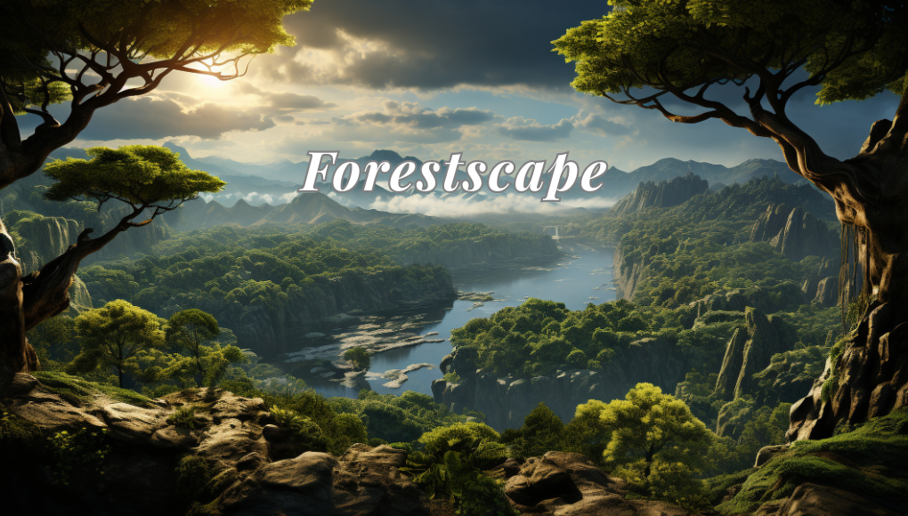

Projects
Here are some of the projects I have worked on. Click on a project card to visit its GitHub repository.

Bangla Sentiment Analysis Detection and Deployment using Social Media Comments Dataset
An offensive language detection model for bangla social media content using Bangla BERT, and deployed it via FastAPI. Docker has been used in this project to ensure consistent, portable, and efficient deployment of the Bangla BERT sentiment analysis API. By containerizing the application, all dependencies, configurations, and the runtime environment are packaged into a single unit that can run reliably across different machines and operating systems.

Advanced Data Analytics and Time Series Forecasting for NYC Taxi and Dhaka Accident Dataset
A Data Analytics and Time Series Forecasting project, analyzed the 2013 NYC Taxi Trips and 2019 Bangladesh Accident datasets using SARIMA, SARIMAX, Geospatial Analysis and Clustering. It uncovers taxi demand trends, accident hotspots and safety insights, offering data-driven recommendations for traffic management and urban planning.

Forestscape
Forestscape, an interactive 3D forest using custom shaders, dynamic lighting, perspective projection, seasonal animations and mouse/keyboard controls. Features include texture changes and animated clouds, providing a realistic and immersive user experience.

Unveiling the Genetic Mosaic: A Multi Model Exploration of Rice Varietal Diversity
A ML and DL project, explores genetic diversity in Turkish rice varieties using 75,000 grain images. It integrates Machine Learning, CNNs and Transfer Learning (VGG16, InceptionV3, MobileNetV2), achieving up to 99.9% accuracy, showcasing advanced AI's role in agricultural applications.

JobBoy BD
An online job portal for job seekers and recruiters, providing personalized access, tailored job postings and detailed information about potential employers. It allows organizations to review resumes, initiate hiring processes and initiate direct discussions.
AquaSense
An "Automation on Water Pump and Water Quality Monitoring System" project, where the pump automatically switches ON/OFF by sensing different water levels and monitoring the water quality to reduce the wastage of water and drinking pure water.

Dental Care
Developed a web-based "Dental Appointment System" for scheduling and managing dental appointments using PHP, CSS, JavaScript and MySQL.
Hyacinth
A "Pharmacy Management System" was developed using Java Swing and MySQL to streamline pharmacy operations, including inventory management, sales, purchases, expiry tracking, and invoice generation to reduce manual work, minimize errors, and enhances efficiency.

Death Stalker
A 2D Metroidvania-style game was created using C/C++ and iGraphics (an OpenGL-based library). Players navigate a mystical land, encountering obstacles and enemies, showcasing core game development skills, including sprite animation, collision detection, enemy and level progression.